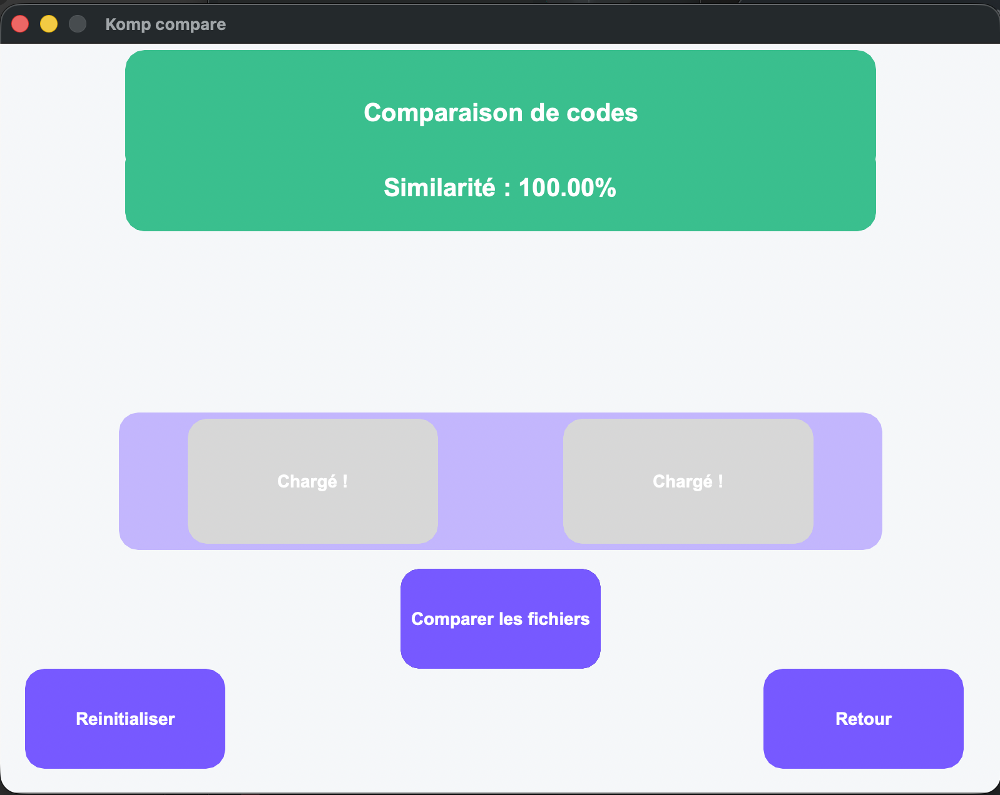
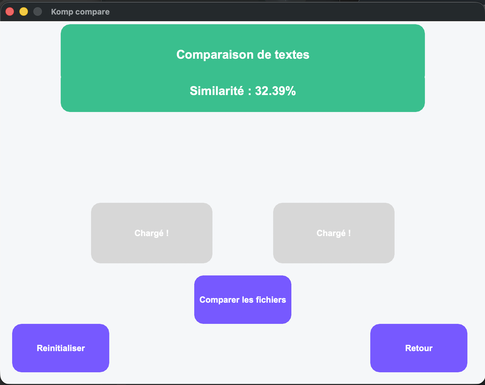

Comparez. Analysez. Simplement.
KOMP est un logiciel de pointe conçu pour la comparaison de documents par paires, fournissant un pourcentage de similitude extrêmement précis. Il traite une vaste gamme de contenus, allant des pages de livres et documents textuels complexes aux codes sources informatiques. Grâce à l'utilisation des empreintes MinHash, KOMP est capable d'analyser de grandes collections comprenant des dizaines de milliers, voire des millions de documents, pour identifier instantanément les doublons ou les contenus fortement ressemblants. Le logiciel intègre également une fonction de correction d'orthographe basée sur la distance de Levenshtein, permettant de mesurer précisément les écarts entre les mots. Enfin, KOMP évolue pour devenir une solution multimédia complète : l'intégration du traitement d'images est en cours pour détecter des similarités visuelles via des algorithmes de hachage perceptuel (pHash) et des histogrammes de couleurs.
Consultez notre documentation technique :
📄 Télécharger le Cahier des Charges (PDF)Consultez notre documentation technique :
Télécharger le logiciel
Version 0.1 Beta - Prête pour l'installation sur votre système.
Note : Après l'ouverture sur Mac, faites un clic droit sur l'application puis "Ouvrir" pour passer la sécurité.
Open Source
Le projet est disponible sur GitHub. Contribuez au développement en Rust !
Aperçu de l'interface
Découvrez les différents modes de comparaison de KOMP.

Mode Analyse de Code Source
Comparaison de texte & LevenshteinL'Équipe KOMP
Trois développeurs passionnés qui apprennent en créant des outils performants.
Maywenn KOUSSAWO
Project Manager & DesignCoordination de l'équipe et conception de l'interface utilisateur pour une expérience fluide et intuitive.

Ayoub EL-ASRI
Lead Developer RustExpertise technique sur le moteur de comparaison en Rust, garantissant rapidité et sécurité des données.
Lucas LEFRANC
Backend & AlgorithmieDéveloppement des algorithmes de calcul de similitude et optimisation de la logique interne de KOMP.